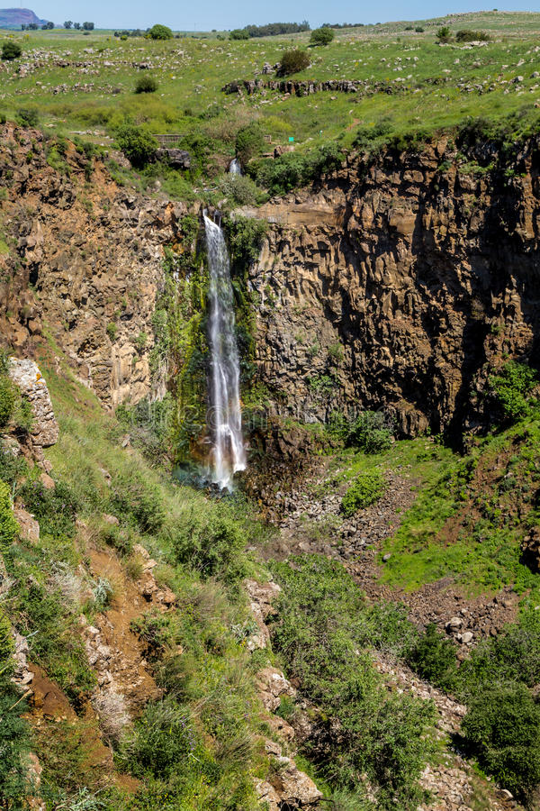
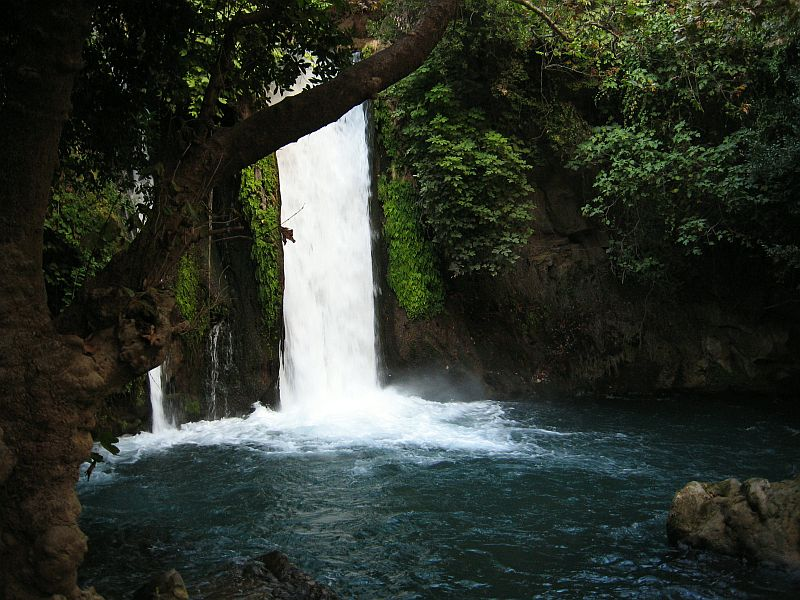
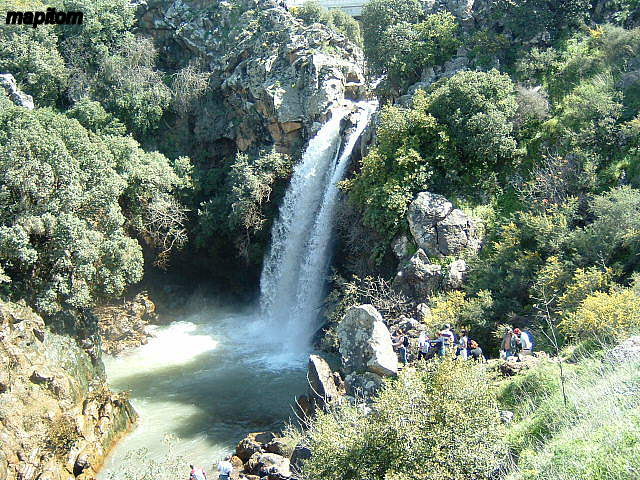

Красота водопадов севера Израиля
Водопад Гамла
Гамла — древний еврейский город на западном склоне Голанской возвышенности в 18 км от озера Кинерет. Основан в 81 году до н. э. Был опорным пунктом восставших в Иудейской войне. В 67 году н. э. после месячной осады был взят и разрушен римскими войсками.
В 2003 году территория древнего города была включена в состав крупного одноимённого заповедника и открыта для туристов.
Кроме древнего города на территории заповедника находятся станция наблюдения за орлами, развалины византийского поселения и самый высокий в Израиле водопад Гамла высотой 53метра.
Если вы будете посещать водорад в течение лета, существует высокая вероятность того, что там не будет воды, однако Вы сможете провести время на природе в окружении исторических мест.
Водопады Нахаль Айун
Нахаль Айун - многолетний ручей в Галилее, Израиль. Поток берет начало из родников в долине Марджаюны на юге Ливана. Он течет на юг на семь километров по различным арыкам, пока не впадает в Израиль возле Метуллы., как приток реки Иордан в долине Хула
Перепады высот образуют водопады по течению ручья.. В дождливые зимние месяцы, поток воды самый сильный. В течение летних месяцев, вода отводится ближе к истокам ручья для полива сельскохозяйственных культур. Эти водопады были объявлены заповедником и включают в себя:
- Водопад Айун, 9.2 м
- Тахана водопад, 21 м
- Тахана - с ивр. "мельница"
- Эшед водопад, с двумя ступенями, 5м и 9м.
- Эшед - с ивр. "лев"
- Таннур водопад, 30 м
- Таннур - с ивр. "печень"
Водопад Баниас
Водопад Баниас, входящий в число крупнейших в Израиле, – один из притоков реки Иордан. Водопад высотой около 10 метров падает в природный пруд, окруженный буйной растительностью. С деревянной тропинки посетители могут увидеть водопад с близкого расстояния и насладиться видом и звуком стремительно падающей воды
Управление природы и парков Израиля построило 100-метровую подвесную пешеходную дорожку над руслом ручья, по которой посетители могут ходить у самого водопада.
Баниас - один из красивейших водопадов в Израиле, а спустя почти десяток километров ручей Баниас сливается с ручьем Дан, и их слияние, собственно, образует реку Иордан.
Водопад Саар
Водопад Саар на Голанских высотах является одним из самых любимых водопадов в Израиле. И это из-за его размера, красоты, и доступности.
Ручей Саар берет свое начало на горном склоне, а оттуда бурным потоком вливается в ручей Хермон, образовывая состоящий из двух ступеней мощный водопад. Когда-то вода здесь была круглый год, но в наши дни ручей оживает только в зимний период, наполняясь водой под воздействием сезонных осадков.
